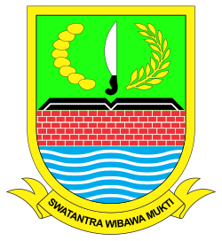

Peta Desa Setia Mulya
Kecamatan Tarumajaya, Kabupaten Bekasi · KKN Universitas Bhayangkara Jakarta Raya

Kecamatan Tarumajaya, Kabupaten Bekasi · KKN Universitas Bhayangkara Jakarta Raya
PROFIL DESA
Kecamatan Tarumajaya, Kabupaten Bekasi
LAYANAN WARGA
Informasi nomor telepon instansi dan kontak WhatsApp layanan warga Desa Setia Mulya